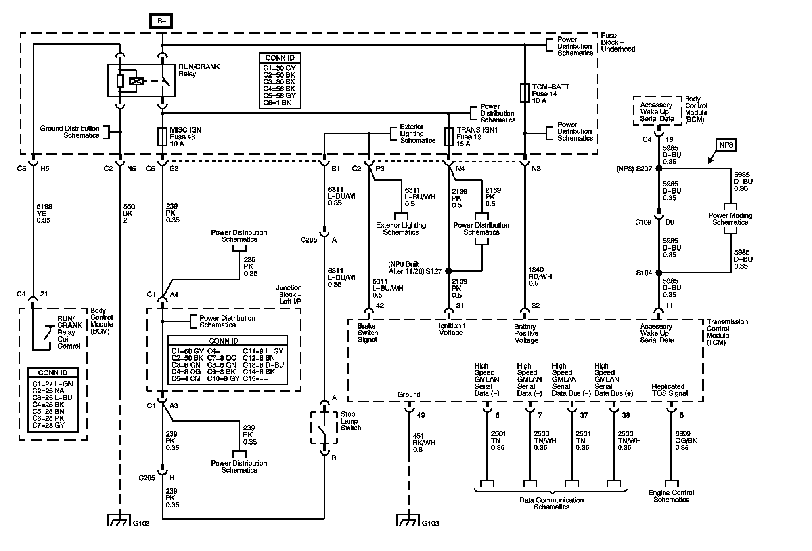
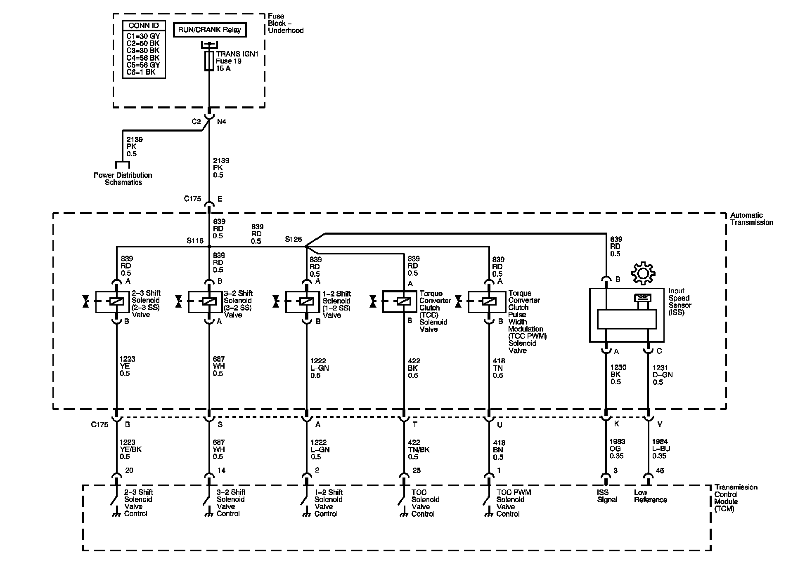
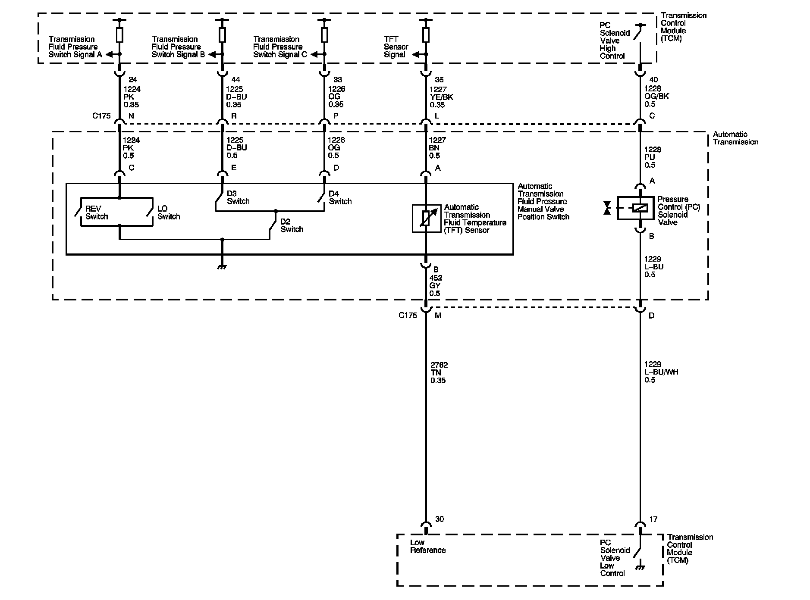
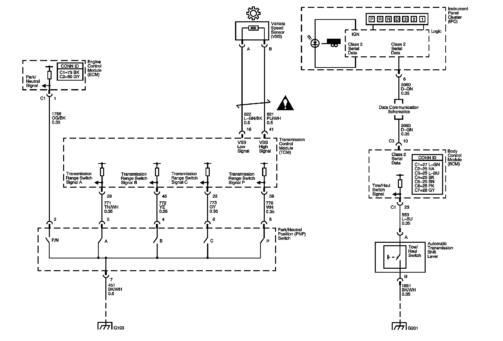

Automatic Transmission Controls Schematics
Automatic Transmission Controls Schematics
Automatic Transmission Controls Schematics 1:

Automatic Transmission Controls Schematics 2:

Automatic Transmission Controls Schematics 3:

Automatic Transmission Controls Schematics 4:

Locations: The locations for the Connectors, Grounds, Splices, and Grommets shown within these diagrams can be found via their numbers at Location. Locations